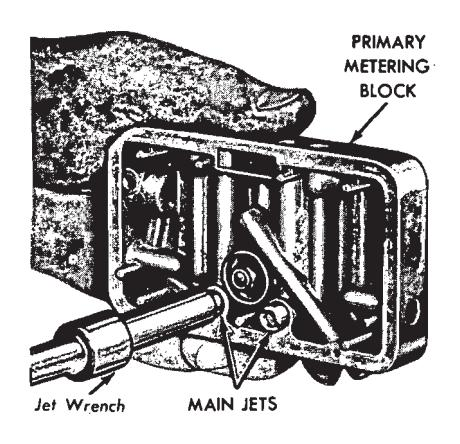
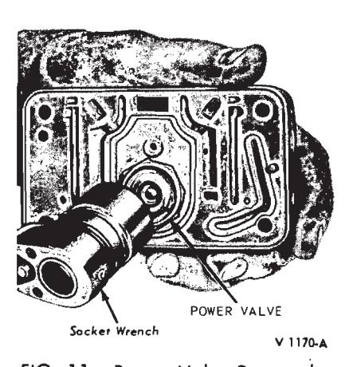
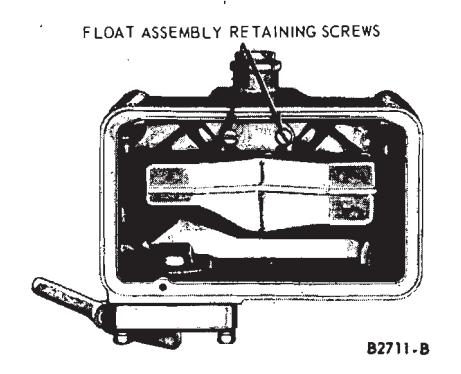
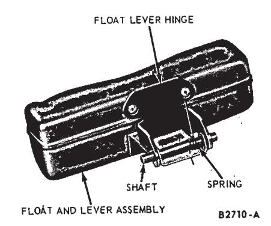
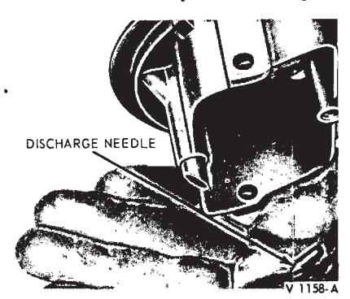
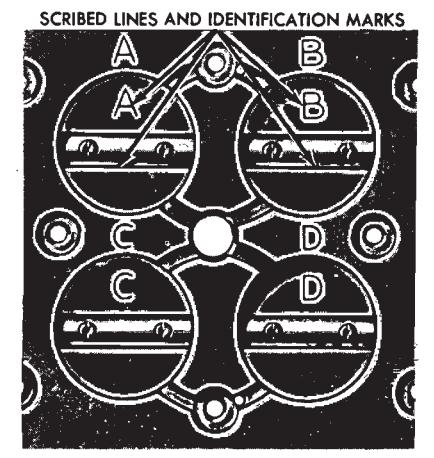
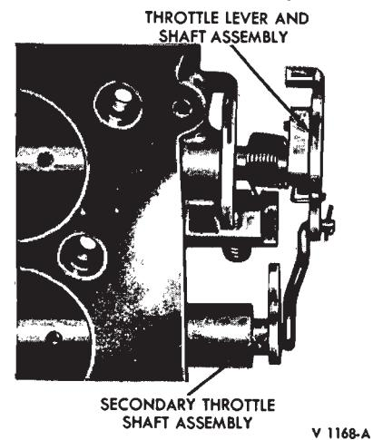
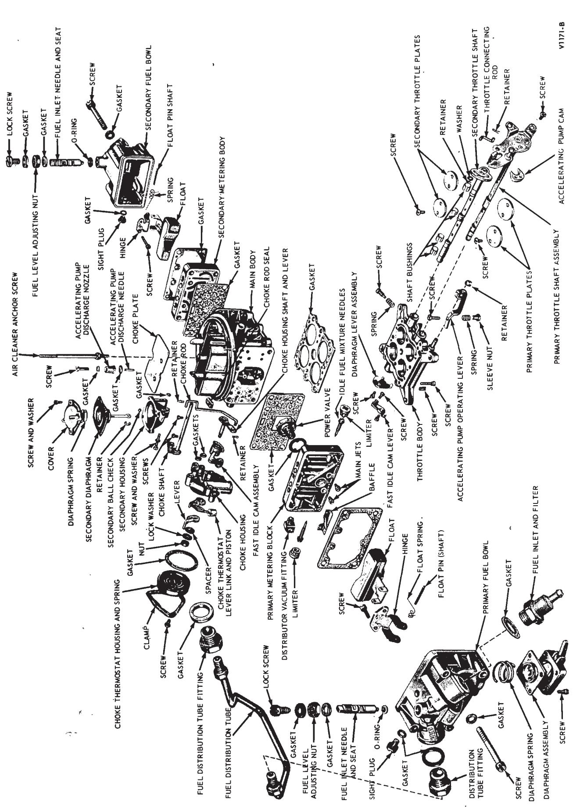
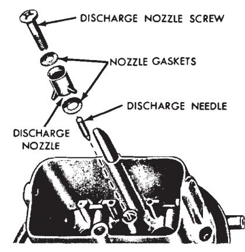
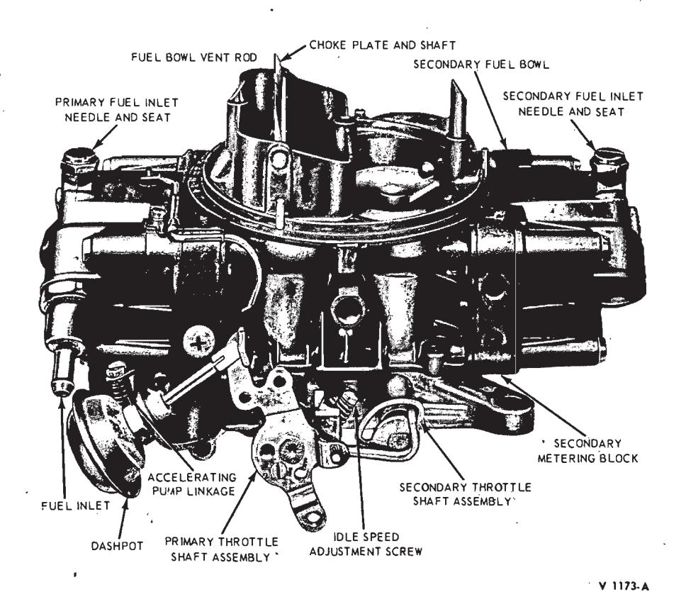

Holley Model 4150-c 4-V Carburetor · 23-06-05c

V 1169-A
Fig. 10 — Main Jet Removal or Installation
Disassembly
To facilitate working on the carburetor, and to prevent damage to the throttle plates, install carburetor legs on the base. If the legs are unavailable, install four bolts, about 2 1/4-inches long of the correct diameter, and eight nuts on the carburetor base.
Use a separate container for the component parts of the various assemblies, to facilitate cleaning, inspection, and assembly.
The following is a step-by-step sequence of operations for completely overhauling the carburetor. However, certain components of the carburetor may be serviced without a complete disassembly of the entire unit. For a complete carburetor overhaul, follow all the steps. To partially overhaul the carburetor or to install a new gasket kit, follow only the applicable steps.
Primary Fuel Bowl and Metering Block
-
Disconnect the inter-connecting fuel line at the primary and secondary fuel bowls. Remove the retaining screws and gaskets, fuel bowl and gasket and the metering block and gasket. Discard the gaskets. Remove the baffle.

Fig. 11 — Power Valve Removal or Installation -
Remove the idle fuel mixture limiters, then remove idle adjusting screws from the metering block.
-
Using a jet wrench, remove the main jets (Fig. 10).
-
Using a socket wrench, remove the power valve and gasket (Fig. 11).
-
Remove the fuel level adjustment lock screw and gasket. Turn the adjustment nut counterclockwise and remove the lock nut and gasket. Remove the fuel inlet needle and seat assembly. Do not disassemble the fuel inlet needle and seat. They are matched assemblies and are replaced as an assembly.
-
Remove the screws securing the float assembly to the fuel bowl (Fig. 12). Remove the float assembly.
-
Slide the shaft out of the float assembly and remove the spring (Fig. 13).
-
Remove the fuel level sight plug and gasket. Remove the fuel bowl in- terconnecting fuel line fitting and gasket. Discard the gasket.

Fig. 12 — Float Assembly Removal or Installation
Fig. 13 — Float Assembly -
Remove the fuel inlet fitting, gasket, and filter screen.
-
Invert the fuel bowl and remove the accelerating pump cover, diaphragm, and spring. The accelerating pump inlet ball check is not removable.
-
Remove the vent rod bracket retaining screw and lockwasher. Remove the plug, spring and bracket from the vent rod.
Secondary Fuel Bowl and Metering Block
-
Remove the fuel bowl. Remove the metering block and the front and the rear gasket.
Disassemble the fuel bowl and the metering block by following Steps 3, 5, 6, 7 and 8 under Primary Fuel Bowl and Metering Block.
Main Body
- Remove the air cleaner anchor stud, and remove the secondary diaphragm operating rod to link retainer.
- Invert the carburetor and remove the throttle body retaining screws and lock washers. Lift the throttle body and discard the throttle body gasket.
Automatic Choke
- Remove the choke rod retainer from the automatic choke housing shaft and lever assembly. Remove the thermostatic spring housing and gasket; then remove the choke housing and gaskets from the main body.
- Remove the choke housing shaft nut, lock washer, and spacer, then, remove the shaft and fast idle cam. Remove the choke piston and lever assembly.
- Remove the choke rod and seal from the main body. If necessary, remove the choke plate from the choke shaft; then slide the shaft and lever out of the air horn. The retaining screws are staked to the choke shaft. If the tips of the screws are flared excessively, file off the flared portion to avoid damage to the threads in the choke shaft. Be careful not to damage the choke shaft or venturi while filing the screws.
Secondary Diaphragm Housing
-
Remove the secondary diaphragm housing assembly and gasket from the main body. The housing as- sembly must be removed before the cover can be removed.

Fig. 14 — Accelerating Pump Discharge Needle Removal -
Remove the diaphragm housing cover; then, remove the spring and diaphragm, and the vacuum ball check from the housing.
Accelerating Pump Discharge Assembly
- Remove the accelerating pump discharge nozzle screw. Lift the pump discharge nozzle and gaskets out of the main body. Invert the main body and let the accelerating pump discharge needle fall into the hand (Fig. 14)
Throttle Body
-
Remove the accelerating pump operating lever retainer.
-
Remove the secondary throttle connecting rod retainers and the connecting rod. Remove the secondary diaphragm lever and the fast idle cam lever retaining screws and washers, and remove the levers.
-
If necessary, remove the throttle stop screw.
-
If it is necessary to remove the throttle plates, lightly scribe the throttle plates along the throttle shaft, and mark each plate and its corresponding bore with a number or letter for proper installation (Fig. 15). Remove the throttle plates. The retaining screws are staked to the throttle shaft. If the tips of the screws are flared excessively, file off the flared portion to avoid damage to the threads in the throttle shaft. Be careful not to damage the throttle shaft or venturi while filing the screws.
Remove the primary throttle shaft return spring from the notch on the throttle shaft lever (Fig. 15). Slide the primary throttle lever and shaft assembly out of the throttle body. If necessary remove the accelerating pump cam.

Fig. 15 — Throttle Plate RemovalSlide the secondary throttle shaft out the main body and remove the bushings from the shaft.
Assembly
Make sure all holes in the new gaskets have been properly punched and that no foreign material has adhered to the gaskets. Make sure the accelerating pump and secondary operating diaphragms are not cut or torn
The carburetor assembly is shown in Fig. 17.
Throttle Body
-
If the secondary throttle plates were removed, position the bushings on the secondary throttle shaft. Slide the shaft into the throttle body. Refer to the lines scribed on the throttle plates; then, install the plates in the proper location with the screws snug, but not tight.
Close the throttle plates and hold the throttle body up to the light. Little or no light should show between the throttle plates and the throttle bores. If the throttle plates are properly installed and there is no binding when the throttle shaft is rotated, tighten the throttle plate screws. Stake the screws. When staking the screws, support the shaft and plates on a block of wood or a soft metal bar to prevent bending of the shaft.
Refer to In-Vehicle Adjustments and Repairs for the correct adjustment of the secondary throttle plates.

Fig. 16 — Throttle Lever and Shaft Assembly Installation
Fig. 17 — Holley Model 4150-C Carburetor Assembly -
Install the secondary diaphragm lever, lock washer, and screw.
-
Install the accelerating pump cam on the primary throttle shaft if it was previously removed. Place the throttle connecting rod end with the smallest bend into position in the primary throttle lever. Slide the throttle shaft into the throttle body, guiding the throttle connecting rod so that the other end fits into the secondary throttle lever.
-
Position the primary throttle return spring so that the small tang fits into the slot in the throttle lever and the long tang rests against the slot in the throttle body stop.
-
Install a washer on the secondary throttle shaft end of the connecting rod; then secure both ends of the connecting rod with hairpin type retainers.
-
Install the primary throttle plates, using the same procedures as for the secondary throttle plates.
-
Install the fast idle cam lever, lock washer, and screw.
-
Install the throttle stop screw.
-
Install the accelerating pump operating lever and retainer.
Main Body
Accelerating Pump Discharge Assembly
-
Drop the accelerator pump discharge needle into its well (Fig. 18). Lightly seat the needle with a brass drift and a hammer.
-
Position the accelerating pump nozzle and gaskets in the main body and install the retaining screw.

V 1172-A
Fig. 18 — Accelerating Pump Discharge Assembly
Secondary Diaphragm Housing
- The secondary diaphragm housing must always be installed before the choke housing. Drop the vacuum ball check in the vacuum port of the secondary diaphragm housing; then, position the secondary diaphragm in the housing and place the spring in the cover.
- Install the cover with the screws finger-tight. Pull the diaphragm rod downward as far as it will go and tighten the cover screws. The diaphragm housing must always be removed from the main body to install the cover.
- Place the gasket on the secondary vacuum passage opening on the main body. Place the diaphragm housing in position on the main body and install the lock washers and retaining screws.
Automatic Choke
-
Position the choke plate shaft in the air horn and install the choke plate in the shaft. Install the rod seal on the choke rod. Slide the U-shaped end of the choke plate rod through the opening in the main body and insert the rod end through the inner side of the bore in the choke lever. The rod end must face outward. Push the rod seal into the retaining grooves on the underside of the air cleaner mounting flange.
-
Position the choke thermostat lever link and piston assembly in the choke housing. Position the fast idle cam assembly on the choke housing and install the choke housing shaft and lever assembly. Position the lever and piston assembly on the choke housing shaft and lever assembly. Install the spacer, lock washer and nut.
-
Lay the main body assembly on its side and position the choke housing gaskets on the main body. Insert the choke rod in the choke housing shaft lever as the choke housing is placed in position on the main body. Be sure the projection on the choke rod is placed under the fast idle cam so that the cam will be lifted when the choke plate is closed. Install the choke housing lock washers and screws. Using needle-nose pliers, install the choke rod cotter pin.
-
Place the thermostatic spring housing gasket in position on the choke housing, engaging the thermostatic spring on the spring lever; then, install the housing, clamp and screws.
Adjust the thermostatic spring housing by aligning the index mark on the cover with the mid-position mark on the choke housing.
Main Body to Throttle Body
- Invert the main body and position the throttle body gasket on the main body. Place the throttle body on the main body and slide the secondary diaphragm rod onto the secondary operating lever as the throttle body is placed into position. Install the throttle body to main body retaining screws and lock washers.
- Secure the secondary diaphragm rod with the retainer.
- Install the air cleaner anchor stud.
Primary Fuel Bowl and Metering Block
-
Place the accelerating pump diaphragm spring and diaphragm in the accelerating pump chamber. The diaphragm must be positioned so that the large end of the lever disc will be against the operating lever. Install the cover with the screws finger-tight. Make sure the diaphragm is centered, then, compress the diaphragm with the pump operating lever and tighten the cover screws.
After the carburetor is assembled, refer to In-Vehicle Adjustments and Repairs, for the correct adjustment of the accelerating pump.
-
Install the gasket and fuel inlet and filter fitting.
-
Install the fuel level sight plug and gasket. Install the fuel bowl interconnecting fuel line fitting and gasket.
-
Position the float hinge bracket on the float arm and install the float shaft and spring (Fig. 13). Secure the float assembly to the fuel bowl with the retaining screws (Fig. 12).
-
Apply petroleum jelly to a new O-ring seal and slide it on the fuel inlet needle and seat assembly.
-
Position the fuel inlet needle and seat assembly in the fuel bowl through the top of the bowl. Position the adjusting nut gasket and nut on the fuel inlet needle and seat assembly. Align the flat on the I.D. of the nut with the flat on the O.D. of the fuel inlet needle and seat assembly. Install the fuel level adjustment lock screw and gasket.
-
As a preliminary float adjustment, refer to In-Vehicle Adjustments and Repairs and perform the Float
Adjustment-Dry.
-
Using a socket wrench, install the power valve and gasket in the metering block (Fig. 1!). Be sure to install the specified power valve. Refer to the specifications for the correct identification number. The number is stamped on a flat on the base of the valve.
-
Using a jet wrench, install the specified jets in the metering block (Fig. 10).
-
Install the idle adjusting screws. Turn the screws in until they just touch the seat, then, back them off 1 1/2 turns for an initial idle fuel mixture adjustment. Do not install the idle fuel mixture limiter caps until the carburetor is installed on the engine aid the idle air-fuel ratio is set to specifications. (Refer to Part 23-01).
-
Position the metering block gasket on the dowels located on the back of the metering block.

Fig. 1 — Holley Model 4150-C 4-V Carburetor—Left SidePosition the metering block and gasket on the main body. Position the baffle plate (primary side only) and the gasket on the metering block. Place the retaining screws and new compression gaskets in the fuel bowl. Position the bowl in place on the metering block while making certain the fuel bowl vent rod is properly posi- tioned against the primary throttle lever. Make sure the accelerating pump lever adjusting screw rests on the lever on the accelerating pump cover.
Tighten the retaining screws.
Secondary Fuel Bowl and Metering Body or Metering Block
- Assemble the secondary fuel bowl, perform a dry float adjustment, and assemble the metering block by following procedure steps 3, 5, 6, 7, 8, 10 and 12 under Primary Fuel Bowl and Metering Block.